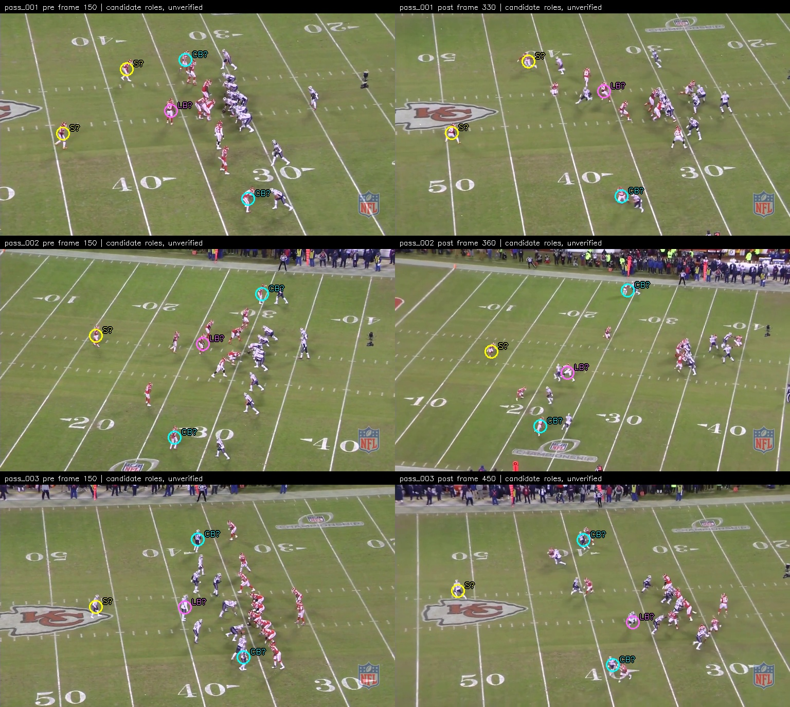
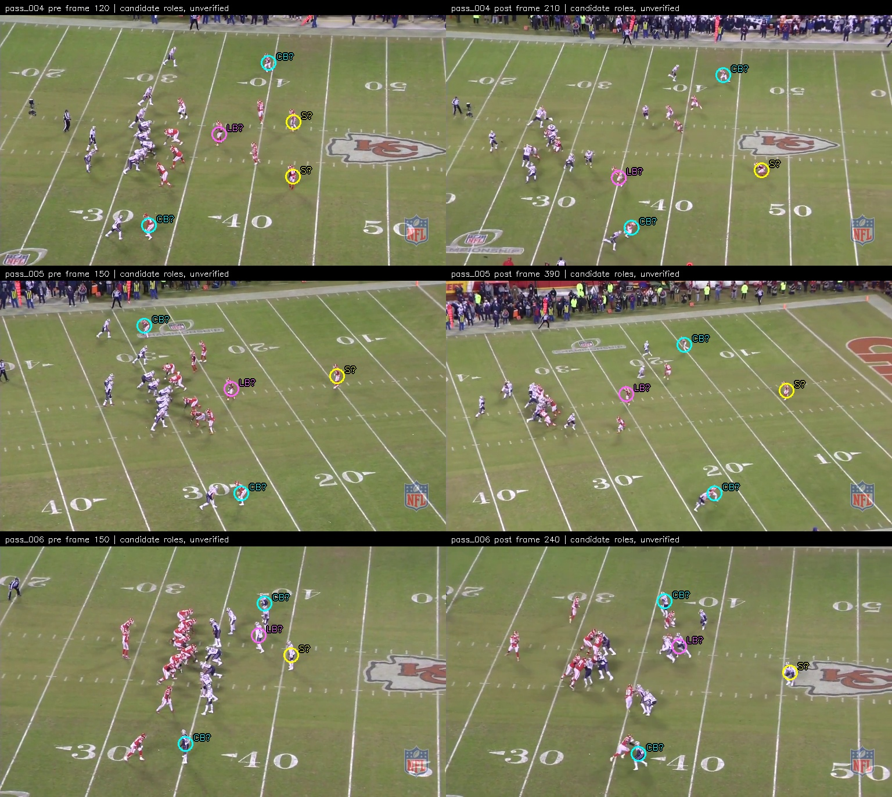
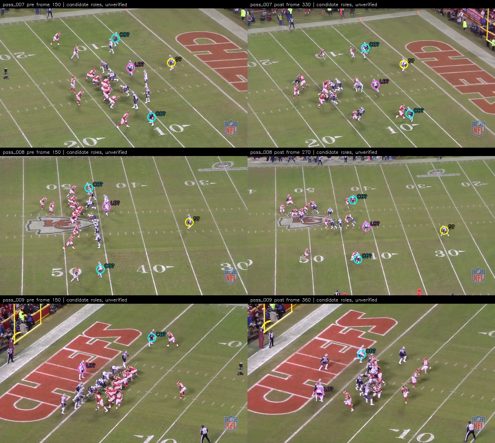
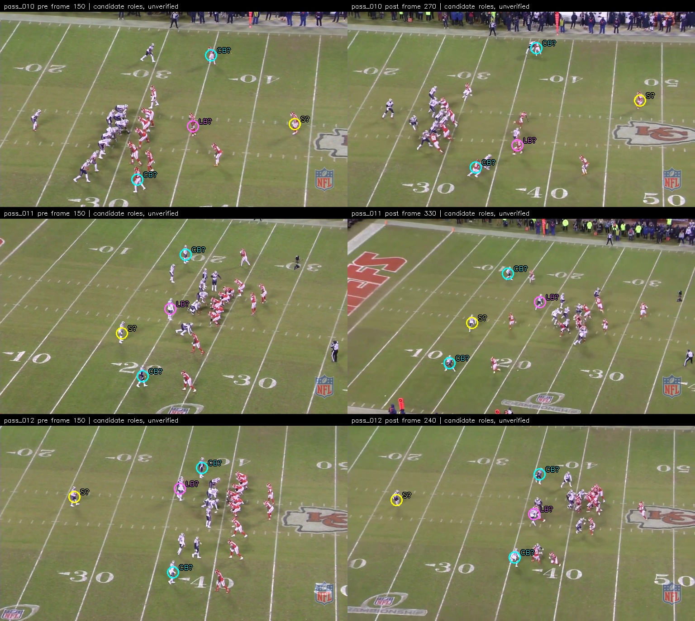
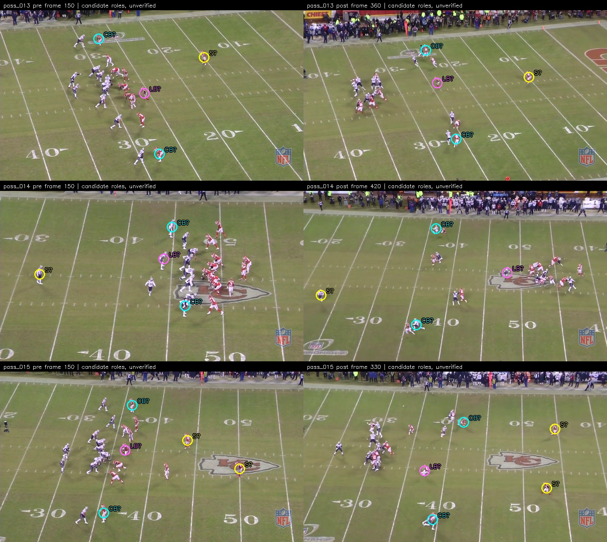

Yellow S: safety; cyan CB: corner; pink LB: linebacker. All are visual hypotheses, not verified roster positions. Points use the 768 x 432 review image. Missing labels mean unresolved or outside view. Do not use as supervised truth.




